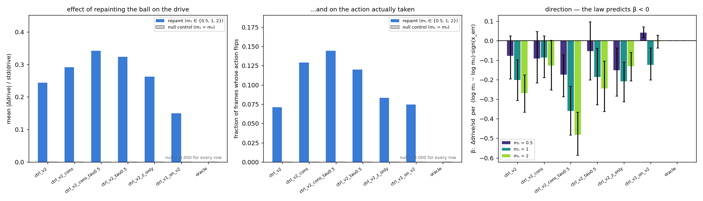
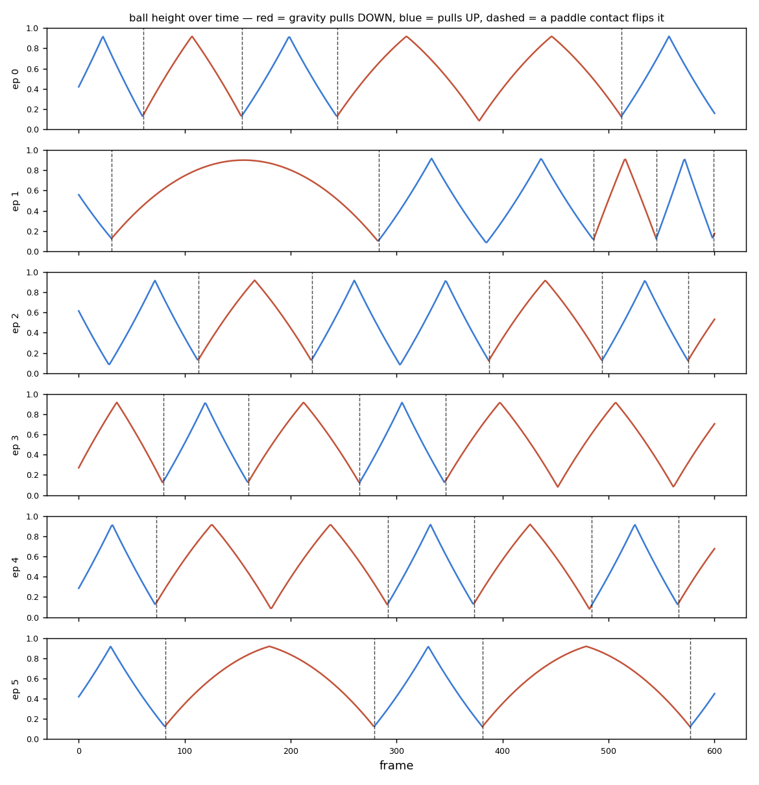

Velocity is not in a frame. The model puts it in its memory anyway.
A VAE compresses each frame to sixteen numbers; a recurrent network learns to predict the next code from the current one and the action; a tiny controller is trained by evolution entirely inside the recurrent network's dream. A single frame is pixel-identical whether the ball moves up or down, so velocity cannot be in the code — and probes confirm it is not. It appears in the LSTM's state instead, because storing it is what predicting the next frame requires.
- 0.02 → 0.92R² for ball velocity read from the frame code
z, then from the memoryh - 35frames the deterministic dream tracks reality before the ball drifts a radius
- 85–90%of a privileged oracle's interceptions, from a controller trained on zero real frames; one trained on a million real frames did no better


The ball's colour sets its mass. Does the model learn that colour causes speed?
Mass is sampled at reset and shown only as colour, yellow to purple; speed is 0.022 / m. From a single cold-start frame the dynamics model dreams lighter balls faster (a colour-blind twin, trained on the same frames through the v1 encoder, does not), and repainting the ball inside a dream changes its dreamed speed with the right sign — an intervention, not a correlation. The first controller stalled at 79% of the oracle because the dreamed ball's colour diffused under sampling; a conservation penalty fixed the drift and the retrained controller plays at oracle level.
- 0.56cold-start correlation between dreamed and true speed; 0.12 for the colour-blind control
- −0.60slope of dreamed speed against repainted mass (law −1.00); +0.01 for the control
- 0.94–1.00interceptions per visit vs an oracle's 0.99, every mass tercile, unseen colours, zero real frames



An opaque band hides the ball. Does anyone remember where it is?
In v3 the model carried the hidden ball's vertical state but not its horizontal position — and then a two-line memoryless oracle turned out to catch 99% of balls, so the tier never needed the capability it was measuring. That negative is kept, and it drove v3.1: an oracle sweep re-designed the band until a memoryless policy catches only half. The model then does carry the hidden ball's position, and a controller trained inside its dream beats the memoryless bound and moves the paddle while the ball is hidden. The same controller with its memory input removed lands exactly on the bound — which is what makes the number mean something.
- 0.17 → 0.52R² for the hidden ball's x from the memory, v3 to v3.1 — equal to a privileged ceiling of 0.48
- 0.73interceptions per visit against a memoryless bound of 0.51; the
h-ablation scores 0.51 - 28%of the required paddle move covered while the ball was invisible (v3: 3%)
Why v3's band didn't need memory · v3.1: acting on memory · Two seeds


A gravity direction, flipped by an invisible event. Nobody remembers the flip.
The sign of a weak gravity flips on every paddle contact and is invisible in any single frame. Two oracle sweeps — run before any training, with a closed form — showed the sign never matters for play, so v4 became a dynamics tier. An LSTM and a causal transformer both learn to infer the sign from the trajectory's curvature, and neither remembers the flip: recall is at chance in the ten frames after a contact and rises as the path bends, and the interventional flip counterfactual is at chance for every model. The transformer that cannot see back as far as the flip is the best predictor of all. The objective, not the architecture, set the ceiling.
- ≤ 0.035landing-point error from a wrong sign — a quarter of a paddle, and it vanishes near the deadline
- 0.25–0.50opposite-curvature fraction in the flip counterfactual, chance 0.50, every model
- 1.78 vs 2.50validation NLL, transformer vs LSTM: better at everything except the thing the tier was about

